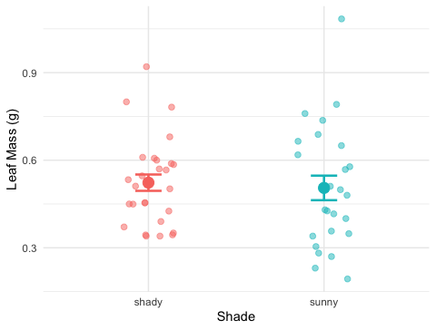
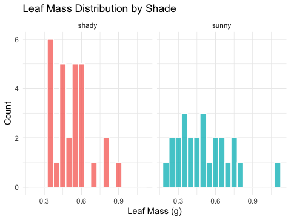

# Load all packages at the top ----------------------------
library(readxl) # reading Excel files
library(tidyverse) # data manipulation + ggplot2
library(car) # Levene's test for variance equalityLecture 09 — T-Tests I: Setting Up the Test
Hypotheses, the t-statistic, and checking assumptions before we test
tidyverse
descriptive-stats
Why comparing means isn’t enough, the t-statistic, why Welch’s is the safe default, and checking normality and variance before we ever run a test.
Where we left off (Lectures 05–06)
- Wrangling —
filter(),select(),mutate(),arrange()as the core tidyverse verbs - Descriptive stats — mean, median, SD, SE with
group_by()+summarize() - NA handling —
sum(!is.na())is the safe way to count n - Boxplot + jittered points; mean ± SE with
stat_summary()(Lecture 03, GGPlot I) - Finding: shady leaves appear heavier, taller, and wider than sunny leaves
Note
✅ Key idea from Lecture 06
We described the pattern in our data. Over the next two lectures we formally test whether that pattern is statistically significant — today we set the test up, next time we run it.
Goals for Today
- Understand why comparing means is not enough — we need a test
- Meet the two-sample t-test and why we default to Welch’s
- State null and alternate hypotheses formally
- Check assumptions before running any test
- normality: histogram + Shapiro-Wilk
- variance: Levene’s test
Tip
🖐 Try it yourself
By the end of today your data will be fully checked and ready to test. Next lecture, we run it.
Tools added today:
car— Levene’s variance test
References:
- 📖 Whitlock & Schluter, Ch. 4 — Estimating with Uncertainty
- 📖 R4DS §3
Both are in the course readings/ folder.
Today’s naming:
- test objects →
_model - plots →
_plot
Our Hypotheses — A Reminder
Biological prediction:
Shady-side leaves will be larger and heavier — they need more surface area to capture the limited light filtering through the canopy.
| Formal statement | |
|---|---|
| H₀ — null | \(\mu_{shady} = \mu_{sunny}\) — no difference in mean leaf weight |
| Hₐ — alternate | \(\mu_{shady} \neq \mu_{sunny}\) — mean leaf weight differs by side |
We use a two-tailed test — we will detect a difference in either direction.
Why two-tailed?
- We predicted shady > sunny
- A one-tailed test would only reject H₀ in that direction
- Two-tailed is more conservative and more broadly accepted
- If the result is significant two-tailed, it is also significant one-tailed
α = 0.05 — our threshold for rejecting H₀
How to Use These Slides — Predict · Type · Run
This lecture runs in two short chunks. After each chunk you switch to the activity worksheet and type the code yourself.
For every code block, do three things:
- Predict — before it runs, say what you think the output will be
- Type it out by hand — do not copy-paste
- Run it and compare to your prediction
Note
✅ Why bother? (the evidence)
- A p-value is easy to memorize and hard to actually understand. Guessing “above or below 0.05” before you see a test result forces you to reason about the test instead of just reading a number off the screen.
- Typing
var.equal = FALSEyourself — rather than pasting it — is what makes you notice it’s there at all, instead of skating past the one argument that separates Welch’s from the standard t-test.
Load Libraries and Data
# Load the leaf data from the data folder -----------------
tree_df <- read_excel("data/2026_06_25_tree_experiment_raw_data.xlsx")
Note
car is the Companion to Applied Regression package. It contains leveneTest(), which we use to check whether our two groups have similar variance.
Install once: install.packages("car")
🧩 Chunk 1 of 2 · Why We Test & the t-Statistic
We will cover: why comparing means isn’t enough, the five-step framework we’ll use for every test this semester, what a two-sample t-test is, and why we default to Welch’s.
Why Comparing Means Is Not Enough
# Remind ourselves what the data look like ---------------
recap_plot <- tree_df %>%
ggplot(aes(x = side, y = weight_g, color = side)) +
geom_point(
position = position_jitter(width = 0.15, seed = 42),
alpha = 0.5,
size = 2
) +
stat_summary(fun = mean, geom = "point", size = 4) +
stat_summary(
fun.data = mean_se,
geom = "errorbar",
width = 0.15,
linewidth = 0.9
) +
labs(x = "Side", y = "Leaf Weight (g)") +
theme_minimal() +
theme(legend.position = "none")
recap_plot
The means look different — but:
- We only have 10 leaves per group
- There is natural variability within each group
- The groups’ ranges overlap somewhat
A p-value tells us:
“If H₀ were true, how often would we see a gap this large just by chance?”
Small p → the gap is unlikely to be chance.
Five Steps to a Hypothesis Test
Every hypothesis test this semester — t-test, ANOVA, regression — follows the same sequence:
| Step | Action | When |
|---|---|---|
| 1 | State H₀ and Hₐ | Today |
| 2 | Check normality | Today |
| 3 | Check variance | Today |
| 4 | Run the test | Next lecture |
| 5 | Interpret and report | Next lecture |
Important
Check assumptions BEFORE running the test.
If your data seriously violate assumptions, the p-value from the t-test is unreliable.
With n = 10 per group, our main concern is gross non-normality. The t-test is quite robust to mild departures.
What Is a Two-Sample t-Test?
A two-sample t-test compares the means of two independent groups.
It asks: Could both groups plausibly be drawn from populations with the same mean?
The t-statistic is:
\[t = \frac{\bar{x}_1 - \bar{x}_2}{\text{SE}_{\text{diff}}}\]
- Numerator: the observed difference in means
- Denominator: the uncertainty in that difference (SE of the difference)
Large |t| → the difference is large relative to the noise → small p-value
| Component | Our context |
|---|---|
| Group 1 | Shady leaves |
| Group 2 | Sunny leaves |
| Measurement | weight_g |
| H₀ | \(\mu_{shady} = \mu_{sunny}\) |
| Hₐ | \(\mu_{shady} \neq \mu_{sunny}\) |
Why Welch’s? — Don’t Assume Equal Variance
Standard t-test — pools the two variances into one estimate. Requires both groups to have the same population variance.
Welch’s t-test — uses each group’s variance separately. Does not require equal variance.
\[t_W = \frac{\bar{x}_1 - \bar{x}_2}{\sqrt{\dfrac{s_1^2}{n_1} + \dfrac{s_2^2}{n_2}}}\]
The denominator is the true SE of the difference — no pooling.
Why always use Welch’s?
- When variances are equal: almost identical result — minimal loss of power
- When variances are not equal: standard t-test gives inflated Type I error (false positives)
- Welch’s protects you either way
Tip
Best practice: use Welch’s as your default for all two-group comparisons.
In R: var.equal = FALSE
Seeing the Formula in Action
Note
🔮 Predict first: t = difference ÷ SE-of-the-difference, and the difference is 4 g. Do you expect |t| to land nearer 1, 5, or 10? Predict before the numbers appear.
# Watch the instructor plug numbers into the formula ----
stats_df <- tree_df %>%
group_by(side) %>%
summarize(
n = sum(!is.na(weight_g)),
m = mean(weight_g, na.rm = TRUE),
s = sd(weight_g, na.rm = TRUE)
)
m_sha <- stats_df$m[stats_df$side == "shady"]
m_sun <- stats_df$m[stats_df$side == "sunny"]
s_sha <- stats_df$s[stats_df$side == "shady"]
s_sun <- stats_df$s[stats_df$side == "sunny"]
n_sha <- stats_df$n[stats_df$side == "shady"]
n_sun <- stats_df$n[stats_df$side == "sunny"]
se_diff <- sqrt((s_sha^2 / n_sha) + (s_sun^2 / n_sun))
t_manual <- (m_sha - m_sun) / se_diff
cat("Difference in means:", round(m_sha - m_sun, 2), "g\n")Difference in means: 4 gcat("SE of difference: ", round(se_diff, 4), "\n")SE of difference: 0.411 cat("t-statistic: ", round(t_manual, 3), "\n")t-statistic: 9.733 Step by step:
- Difference in means: 7.80 − 3.80 = 4.0 g
- SE of the difference: \(\sqrt{\frac{s^2_{shady}}{10} + \frac{s^2_{sunny}}{10}}\)
- t = difference / SE
The observed difference is ~10 standard errors above zero — very far from what we’d expect if H₀ were true. You’ll try this yourself with a calculator in the activity’s optional section — today the goal is just to see where the number comes from.
→ ACTIVITY 9 Parts 1–2 now
🧩 Chunk 2 of 2 · Steps 1–3: Hypotheses & Assumptions
We will cover: stating H₀ / Hₐ formally, checking normality (histogram + Shapiro-Wilk), and checking equal variance (Levene’s).
Step 1 — Hypotheses (Formal)
Null hypothesis:
\[H_0: \mu_{shady} = \mu_{sunny}\]
Shady and sunny leaves have the same mean weight in the population.
Alternate hypothesis (two-tailed):
\[H_A: \mu_{shady} \neq \mu_{sunny}\]
The mean leaf weights differ between sides — in either direction.
Significance level: α = 0.05
We will reject H₀ if p < 0.05.
Why state hypotheses first?
- Keeps the analysis honest
- Prevents “HARKing” (Hypothesizing After Results are Known)
- Forces you to commit to a direction (one-tailed) or not (two-tailed) before seeing the data
Our commitment: two-tailed, α = 0.05, before running any test.
Step 2 — Check Normality: Histogram
# Histogram per group to visually check normality -------
hist_norm_plot <- tree_df %>%
ggplot(aes(x = weight_g, fill = side)) +
geom_histogram(binwidth = 1, color = "white", alpha = 0.8) +
facet_wrap(~side, ncol = 2) +
labs(
title = "Leaf Weight Distribution by Side",
x = "Leaf Weight (g)",
y = "Count"
) +
theme_minimal() +
theme(legend.position = "none")
hist_norm_plot
What to look for:
- Roughly bell-shaped — not heavily skewed
- No obvious bimodal peaks
- No extreme outliers
With n = 10 per group, histograms look lumpy — that is normal for small samples.
Note
A QQ plot is another common visual check — same idea, different picture. You’ll find one in the activity’s optional section if you want to compare.
Step 2 — Check Normality: Shapiro-Wilk Test
Note
🔮 Predict first: Shapiro-Wilk’s H₀ is “the data are normal.” From the histogram you just saw, predict for each side: will p be above or below 0.05?
# Shapiro-Wilk test for the sunny side -----------------
tree_df %>%
filter(side == "sunny") %>%
pull(weight_g) %>%
shapiro.test()
Shapiro-Wilk normality test
data: .
W = 0.8197, p-value = 0.02513# Shapiro-Wilk test for the shady side -----------------
tree_df %>%
filter(side == "shady") %>%
pull(weight_g) %>%
shapiro.test()
Shapiro-Wilk normality test
data: .
W = 0.89461, p-value = 0.191Shapiro-Wilk H₀: the data are normally distributed.
- p > 0.05 → fail to reject normality → proceed with t-test
- p < 0.05 → evidence of non-normality → consider a non-parametric alternative
Important
Small-sample caution:
With n = 10, this test has low power — it rarely detects non-normality even when present. The histogram is equally important.
Step 3 — Check Variance: Levene’s Test
# Levene's test — are the variances similar? -----------
leveneTest(weight_g ~ side, data = tree_df)Levene's Test for Homogeneity of Variance (center = median)
Df F value Pr(>F)
group 1 0.6 0.4486
18 Levene’s test H₀: the two groups have equal variance.
- p > 0.05 → variances are not significantly different
- p < 0.05 → variances are significantly different
Our response regardless of the result:
We will use Welch’s t-test (var.equal = FALSE).
Welch’s is valid whether or not the variances are equal. We run Levene’s to understand our data, not to choose our test.
Live Demo — Watch It Break (on purpose)
Suppose I forgot library(car) and run Levene’s:
leveneTest(weight_g ~ side, data = tree_df)R stops with:
Error in leveneTest(weight_g ~ side, data = tree_df) :
could not find function "leveneTest"The fix — load the package that contains the function:
library(car)
leveneTest(weight_g ~ side, data = tree_df)
Tip
✅ Why show a broken run?
leveneTest() lives inside car, not base R — so R has no idea what the function is until the package is loaded. Seeing that exact error message once, on purpose, means you won’t waste ten minutes hunting for a typo the next time it happens to you.
→ ACTIVITY 9 Parts 3–6 now
What We Learned Today
- Why we need a hypothesis test — means alone are not enough
- The five-step framework we’ll reuse all semester
- Welch’s t-test — use
var.equal = FALSEas the safe default - Two-tailed test — detects differences in either direction
- Checking assumptions before testing: normality (histogram + Shapiro-Wilk), variance (Levene’s)
References:
- 📖 Whitlock & Schluter, Ch. 4 — Estimating with Uncertainty
- 📖 R4DS §3
Up next — Lecture 10, T-Tests II:
- Run Welch’s
t.test() - Decode the output line by line
- Make a formal decision and write a results sentence